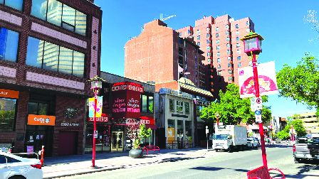
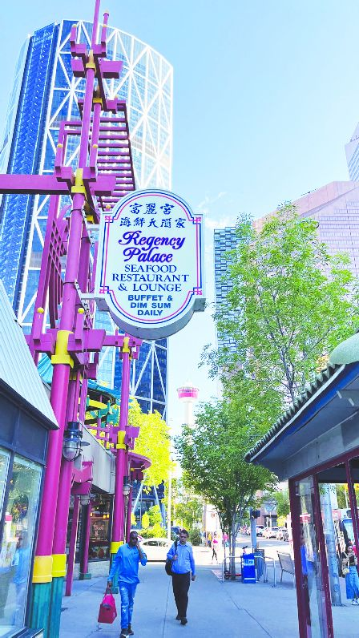

联邦政府希望发展旅游业。

阿省亦依赖旅游业。（明报图片）
联邦政府希望到2030年加拿大能够成为全球前10的旅游目的地，把旅游业年收从1400亿元，提升至1600亿元，即把加国旅游业对本地生产总值（GDP）的贡献提升40%。
不过专家指出，来自中国、日本、韩国等东亚国家的游客并没有完全恢复到疫情之前的水平。在世界经济论坛的旅行和旅游发展指数排名中，加拿大目前居于第11位，联邦政府设定的目标是到2030年位居第7位。但专家表示，这并非易事。
多伦多都市大学（TMU）泰德罗杰斯酒店与旅游管理学院院长迪曼什（Frederic Dimanche）说：「该指数并不是衡量来加游客的数量，而是与安全、安保、航空运输、铁路和其他旅游基础设施的质量相关。这与加拿大的景点、自然资源和文化资源有关。加拿大必须提高自身的水平，但这也取决于其他国家的表现。」
Destination Canada于今年6月发布了一项新战略，介绍了实现目标所需做的工作，包括确定最主要的目标受众、如何打造加拿大品牌、如何吸引更多的商务活动和会议、如何增加劳动力供应以及如何在考虑环境可持续性的同时做到这一切。其中一个目标市场就是包括中国在内的东亚。
由于加中关系仍然充满矛盾，中国尚未将加拿大重新列入其批准的团队旅游名单。迪曼什说：「我们失去了很多来自中国的业务。一些经营者因此受到严重影响。但这并不是我们所能控制的。」尽管数据显示加拿大境内旅游在疫情后已经全面恢复，加拿大人出国旅游的人数也正在恢复，但来加拿大旅游的外国人数量还没有恢复到疫情前的水平。
加拿大皇家银行（RBC）经济学家克莱尔·范（Claire Fan）说：「加拿大家庭对国外旅游目的地的需求反弹，并没有得到来加拿大的外国游客同样程度的回应。目前仍有10%的差距，我们发现这主要是由于游客不是来自东亚。这包括中国、日本和韩国。」
渥太华旅游公司Lady Dive Tours的共同所有人卡梅伦（Etienne Cameron）说：「我们还没有看到亚洲市场真正完全回到过去的状态。加拿大不在中国批准的名单上仍然是一个重大打击。我们已经注意到了这种影响。影响非常大。大的旅游团不再来加拿大了。」
根据政府的统计数据，旅游业为加拿大全国各地提供了190万个工作岗位。联邦旅游部长马丁内斯-费拉达（Soraya Martinez-Ferrada）：「旅游业是经济驱动力，它实际上超过了汽车业、农业和渔业。」
但是，加拿大的交通成本也是一个难点，没有快速铁路，也没有航空竞争来压低价格，而其他小得多的国家却有这些优势。马丁内斯-费拉达说，政府的旅游战略之一就是进一步投资交通。
Aaron Zhang, Local Journalism Initiative Reporter